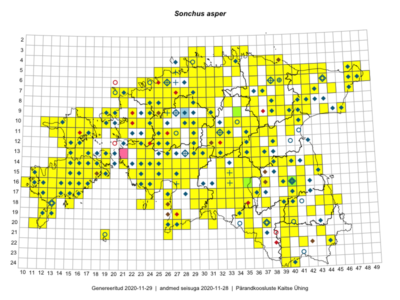

Sonchus asper
Uuendatud: 2016-12-02
Kaardile koondatud taksonid: Sonchus asper (L.) Hill

Kaart põhineb 305 kirjel, neist vaatlusi 304 ja eksemplare 1. Taksonit on leitud 238 ruudust.
Kuvatud viited 20 esimesele andmebaasikirjele, ülejäänud PlutoFis
- Malle Leht: 2015-07-09: : ala
- Ott Luuk, Peedu Saar: 2015-07-27: 11-35: ala
- Peedu Saar: 2015-07-15: 15-39: ala
- Peedu Saar, Liina Oja: 2015-07-21: 06-44: ala
- Ott Luuk, Toivo Sepp: 2015-07-12: 10-31: ala
- Toomas Kukk, Tiit Hallikma: 2015-07-24: 06-41: ala
- Malle Leht: 2015-07-25: 18-40: ala
- Malle Leht: 2015-07-28: : ala
- Malle Leht: 2015-07-27: 18-40: ala
- Malle Leht: 2015-07-08: : ala
- Malle Leht: 2015-07-18: 19-40: ala
- Peedu Saar: 2015-08-04: 14-36: ala
- Rein Kalamees, Kersti Püssa: 2015-08-25: 03-35: ala
- Tiit Hallikma, Toomas Kukk: 2015-07-22: 05-47: ala
- Rein Kalamees, Kersti Püssa: 2015-08-23: 03-34: ala
- Toomas Kukk, Meeli Mesipuu, Thea Kull, Eerik Leibak, Peedu Saar: 2014-07-11: 06-44: ala
- Rein Kalamees, Kersti Püssa: 2015-08-24: 04-37: ala
- Rein Kalamees, Kersti Püssa: 2015-08-15: 05-36: ala
- Rein Kalamees, Kersti Püssa: 2015-09-12: 04-33: ala
- Tiit Hallikma, Toomas Kukk: 2015-08-24: 12-24: ala